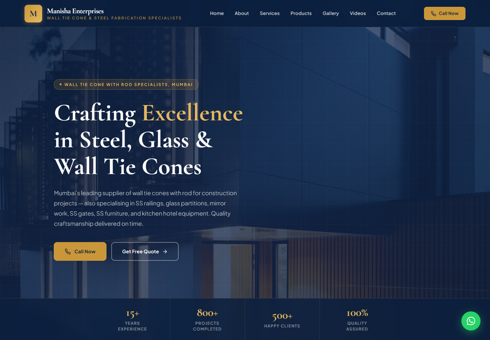

Manisha
Enterprises
A live business website and admin dashboard, built with a Java backend and a Next.js frontend.
Public-site screenshot · September 2026

A public presence.
A manageable application.
The project brings the business's services and work online, with a separate admin interface for content and incoming enquiries.
Show the work
Products, services, galleries and videos on the public website.
Manage content
An admin dashboard for maintaining business information and media.
Receive enquiries
A website form connected to the backend, plus direct WhatsApp contact links.
Java APIs behind the website.
TypeScript · Tailwind CSS
Validation · application logic
Cloudinary uploads
The frontend calls Java REST APIs to work with business content and enquiries. MongoDB stores application records; Cloudinary handles media uploads.
Conceptual request flow, based on the implementation. Client source code remains private.
Public access and admin actions.
Authentication
JWT-based admin authentication with Spring Security.
Enquiry flow
Form submission → REST API → validation and service logic → MongoDB.
Content updates
Admin screens work with backend endpoints to manage products, media and enquiries.
This walkthrough shows the public website and explains the architecture; it does not display a client admin session or customer records.
From Java backend
to client-facing delivery.
Backend
Java 21/Spring Boot APIs, MongoDB persistence and JWT admin authentication.
Frontend
Next.js/TypeScript public website and content-management dashboard.
Integration
Cloudinary uploads and enquiry forms connected to the application workflow.
The live site is evidence of delivery. Customer volumes, conversion improvements and time savings have not been measured for this case study.
See the delivered website.
For Java backend interviews, I can walk through the request flow, authentication boundaries, data model and how the frontend connects to the APIs.
One-page resume · GitHub · LinkedIn
Download the 90-second captioned walkthrough · Silent WebM video